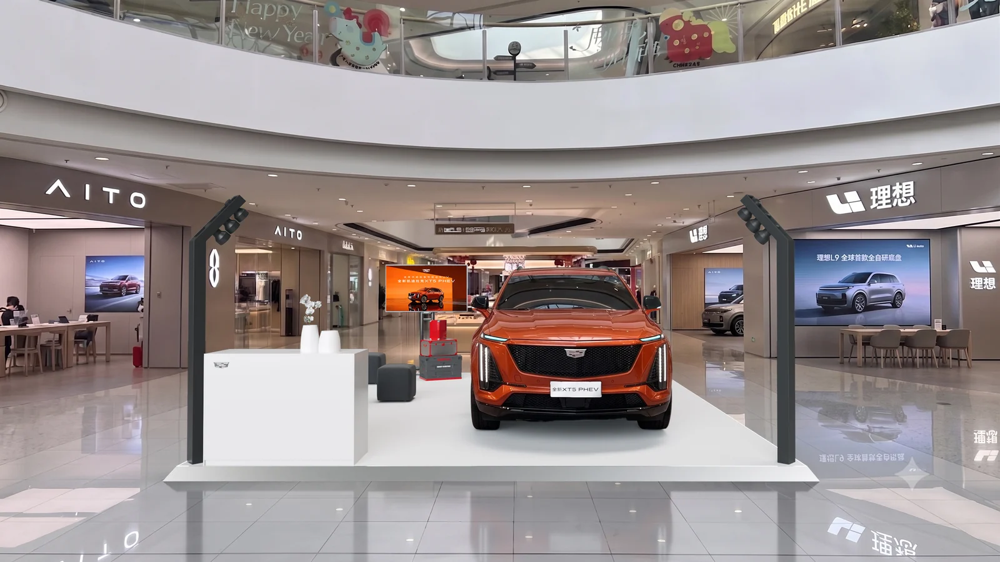
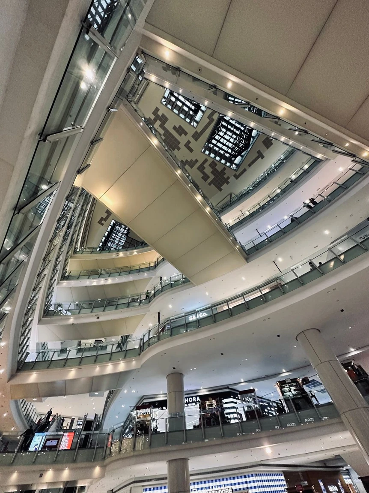
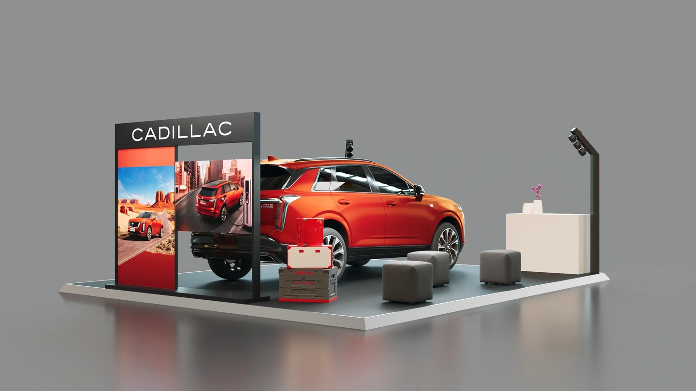
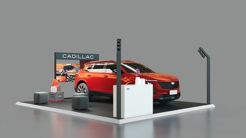
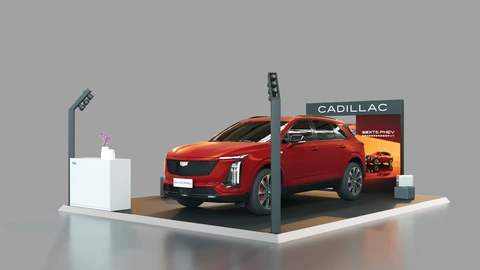

凯迪拉克 3 区 XT5 外展

商场中庭与展台场景合成 · 方案预览
中庭主视觉从正面能同时看到居中的车头、偏左的接待台和后方展屏。两侧灯杆标出白色台面的边界，留下从走廊接近展车的位置。

从照片的仰拍可见，弧形玻璃护栏逐层框出中庭开口。展台成片在开口下保留正面通道，让楼上和同层经过的人都看得到车。
Rich Vijay · Pexels 许可从两侧接近展台
左侧低视点先读到车头和侧面，接待台退到背景。换到右侧，白色接待台进入前景，展示屏也从车尾之后露出。


品牌背板的另一种摆法
9 月方案改用深色台面和竖向品牌背板。

9 月背板方案 · 侧后方案渲染 · 9 月版本
9 月背板的车头侧与接待侧
深色台面两端分别留给车头和接待。换到车的另一侧，能比较背板信息与整车轮廓的遮让。


6 月方案与商场走廊
先用走廊合成交代接近方向，再看正面和车尾视角如何安排接待台、展示屏和车身。顶视及高机位用于对照位置。


折叠椅布置
折叠椅放在展车与背板之间。正面仍保留车头与接待台的完整轮廓，转到侧后才看清座椅和车侧留出的距离。


完整图集
17 张 · 点图放大